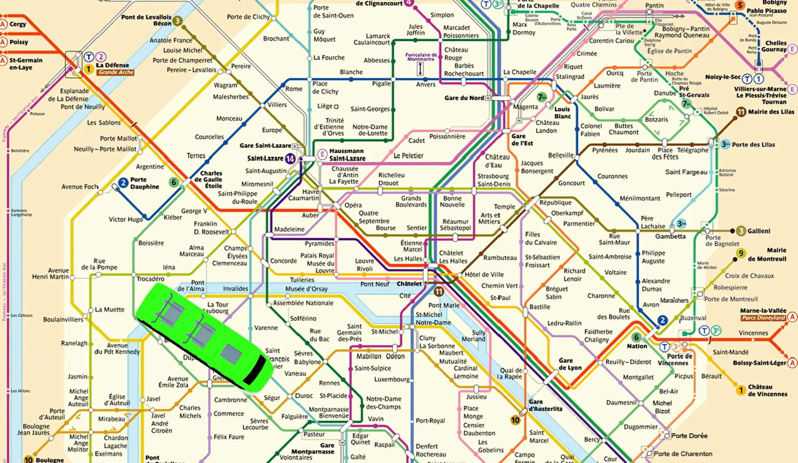
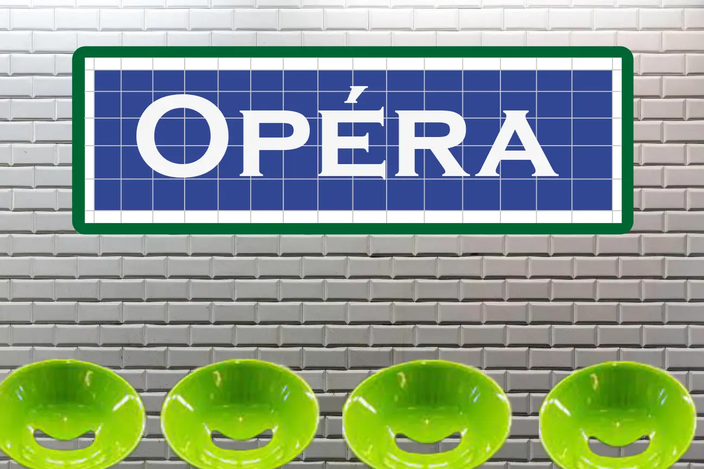
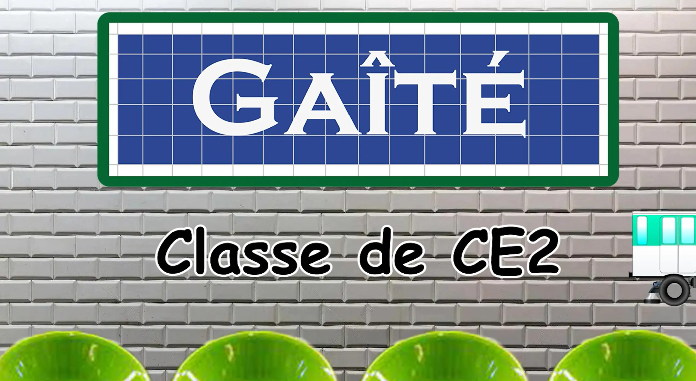
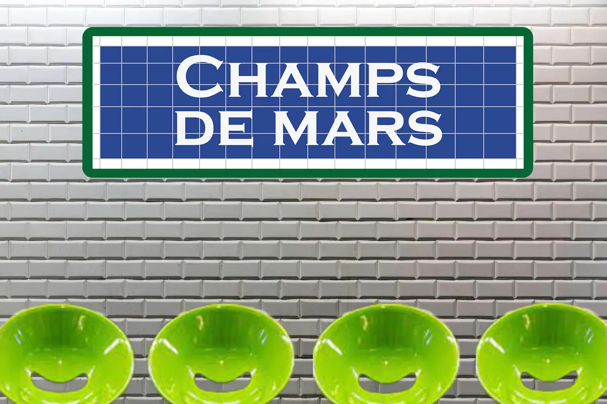
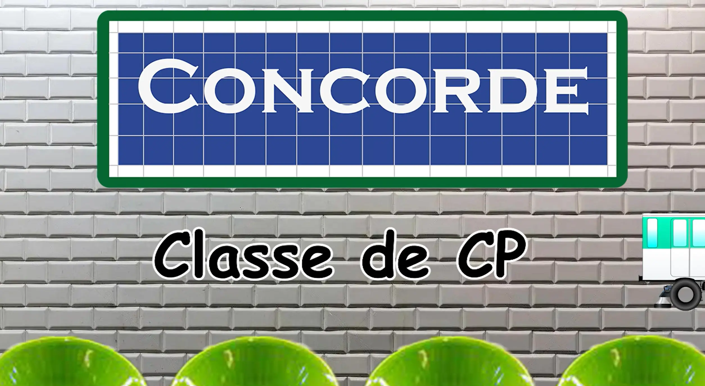

St-Jo prend le métro
Présentation
De mi-juin, à mi-juillet, je venais faire du bénévolat au sein de l'école Saint-Joseph à Puteaux en aidant l'assistante de direction et les maîtresses à préparer leur classe. C'est ainsi, sachant que j'étais en MMI, elles m'ont demandé de réaliser un motion design pour leur spectacle de fin d'année.
Le spectacle était sur le thème du métro. J'ai donc recréé une station de métro à l'aide de Photoshop et Illustrator. Puis After Effect m'a permis d'animer le métro et de faire apparaître la classe qui allait danser.
J'étais très fière que mon travail soit présenté au théâtre de Puteaux devant les nombreux parents d'élèves.
Rôle
Motion Designer
Date
Mars 2023
Compétences
Photoshop
Illustrator
After Effect




